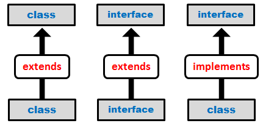
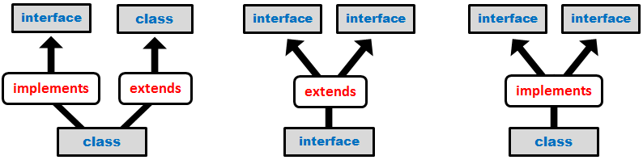

Javaالإنترفيس في جافا
مفهوم الإنترفيس في جافا
interface هي كلمة محجوزة في جافا, و تكتب إنترفيس في اللغة العربية.
في دروس سابقة رأينا أنه في جافا لا يمكن للكلاس العادي أن يرث من أكثر من كلاس في نفس الوقت لأنه يمكن للكلاس أن يفعل extends لكلاس واحد فقط.
من أجل ذلك عمل مطوروا لغة جافا على إبتكار نوع جديد يشبه الكلاس العادي و يسمح لنا بتطبيق مبدأ تعدد الوراثة الذي يعتبر شيء مهم جداً في لغات البرمجة. هذا النوع الجديد يسمى interface.
يستخدم الإنترفيس كوسيط لتطوير البرامج, و المقصود هنا أن المبرمج يستخدم الإنترفيس إذا أراد جعل برنامجه قابلاً للتطوير بكل مرونة سواءً لأجل نفسه أو من قبل مبرمجين آخرين, فهو يستخدم الإنترفيس لإجبار المبرمجين على اتباع أسلوب محدد يضمن توافق الكودات التي سيكتبها المطورون الآخرون مع كودات البرنامج الأساسية.
إذاً الإنترفيس يستخدم لتجهيز أسلوب يمكن السير عليه لربط الكلاسات بأسلوب سهل, منطقي و مفهوم. سترى قوة الإنترفيس الحقيقية في درس الـ Polymorphism لكننا سنركز في هذا الدرس على طريقة التعامل مع الإنترفيس في جافا.
التعامل مع الإنترفيس في جافا
التعامل مع الإنترفيس يختلف عن التعامل مع الكلاس العادي, و هو يشبه التعامل مع الـ Abstract Class.
فعلياً الإنترفيس يطبق مبدأ الـ Full Abstraction.
الأشياء التي يمكن تعريفها بداخل الإنترفيس
دوال لا تملك body, أي Abstract Method.
متغيرات مع إعطائهم قيمة بشكل مباشرةً عند تعريفهم. لأن أي متغير تقوم بتعرفه بداخل الإنترفيس يعتبر معرف كـ public final static بشكل تلقائي.
Nested Classes, أي كلاس نوعه static بداخل كلاس نوعه static.
Nested Interfaces, أي إنترفيس بداخل إنترفيس.
طريقة تعريف الإنترفيس
الإنترفيس هو في الأساس Full Abstract, لكن لا يجب وضع الكلمة abstract عند تعريفه. و لا يمكن تعريف إنترفيس كـ prviate أو protected لأنه دائماً يعتبر public حتى لو لم تضع كلمة public قبله. كما أنه لا يمكن تعريف الإنترفيس كـ final أو static لأنه تم تصميم الإنترفيس لجعل أي كلاس يرثه يفعل Override للدوال الموجودة فيه.
إذاً لتعريف إنترفيس, أكتب interface ثم ضع له أي إسم تريده.
مثال
interface MyInterface {
}
طريقة تعريف متغيرات بداخل إنترفيس في جافا
متغيرات الإنترفيس تعتبر معرفة كـ public final static حتى لو لم تقم بتعريفها كذلك, الأمر الذي يجعلك مجبراً على إعطاءها قيمة مباشرةً عند تعريفها مع عدم إمكانية تغيير هذه القيمة.
مثال
interface MyInterface {
int X = 1; // حتى و لم نعرفه كذلك public final static يعتبر معرف كـ X المتغير
}
طريقة تعريف دوال بداخل إنترفيس في جافا
دوال الإنترفيس هي في الأساس Abstract Method, إذاً لا حاجة إلى وضع الكلمة abstract عند تعريف أي دالة بداخله. كما أن أي دالة يتم تعريفها بداخله تعتبر public حتى لو لم تعرفها كـ public. و لا يمكن تعريف الدوال فيه كـ prviate أو protected أو final أو static.
مثال
interface MyInterface {
void myMethod(); // حتى و لم نعرفها كذلك public abstract تعتبر معرفة كـ myMethod() الدالة
long myResult(); // حتى و لم نعرفها كذلك public abstract تعتبر معرفة كـ myResult() الدالة
}
شروط الربط بين الكلاس و الإنترفيس
لا يمكن إنشاء كائن من إنترفيس.
يستطيع الكلاس أن يرث من كلاس واحد, أي يستطيع أن يفعل extends لكلاس واحد.
لا يستطيع الكلاس أن يرث من إنترفيس, أي لا يستطيع أن يفعل extends لإنترفيس.
يستطيع الكلاس تنفيذ إنترفيس أو أكثر, أي يستطيع أن يفعل implements لإنترفيس أو أكثر.
الكلاس الذي ينفذ إنترفيس, يجب أن يفعل Override لجميع الدوال التي ورثها من هذا الإنترفيس .
يستطيع الإنترفيس أن يرث من إنترفيس أو أكثر. أي يستطيع الإنترفيس أن يفعل extends لإنترفيس أو أكثر.
تنفيذ الإنترفيس في جافا
عند تنفيذ أي إنترفيس, يجب أن تفعل Override لجميع الدوال الموجودة فيه, و يجب تعريفهم كـ public حتى يستطيع أي كائن من هذا الكلاس أن يستخدمهم.
مثال
interface A { // لجميع الدوال الموجودة فيه Override أي كلاس ينفذ هذا الإنترفيس يجب أن يفعل
void print();
}
class B implements A { // A ينفذ الإنترفيس B هنا قلنا أن الكلاس
@Override // public لا تنسى إضافة كلمة .print() للدالة Override مجبور أن يفعل B الكلاس
public void print() {
System.out.println("B should Override this method");
}
}
شروط أساسية عليك اتباعها عند إنشاء إنترفيس
لا تستخدم أي Access Modifer عند تعريف إنترفيس.
لا تستخدم أي Access Modifer عند تعريف دالة بداخل إنترفيس.
بداخل الإنترفيس جميع الدوال يجب أن لا تملك body. و يمكن جعل الدالة ترمي إستثناء.
لا يمكن للإنترفيس أن يملك كونستركتور.
شاهد المثال »
الأسباب التي تدفعك إلى استخدام الإنترفيس
الفرق بين الكلمتين extends و implements في جافا
extends تعني وراثة, نستخدمها لجعل كلاس يرث من كلاس, أو لجعل إنترفيس يرث من إنترفيس أو أكثر.
implements تعني تنفيذ, نستخدمها لجعل كلاس ينفذ إنترفيس أو أكثر.
الصورة التالية توضح لك متى يمكن إستخدام الكلمتين extends و implements.

متى تكون مجبراً على أن تفعل Override و متى لا
في حالة الـ extends:
إذا كان عندك كلاس يرث من كلاس, يكون للـ Subclass الحرية في أن يفعل Override للدوال التي ورثها.
إذا كان عندك كلاس يرث من كلاس نوعه abstract, يكون الـ Subclass مجبراً على أن يفعل Override للدوال المعرفة كـ abstract.
إذا كان عندك إنترفيس يرث من إنترفيس, لا يستطيع الـ SubInterface أن يفعل Override للدوال التي ورثها.
في حالة الـ implements:
إذا كان عندك كلاس ينفذ إنترفيس, يكون الـ Subclass مجبراً على أن يفعل Override للدوال التي ورثها.
إذا كان عندك كلاس نوعه abstract ينفذ إنترفيس, يكون الـ Subclass له الحرية في أن يفعل Override للدوال التي ورثها.
أشكال تعدد الوراثة في جافا
إذا قام كلاس بتنفيذ أكثر من إنترفيس, أو إذا قام إنترفيس بوراثة أكثر من إنترفيس, تسمى هذه العمليات وراثة متعددة (Multiple Inheritance).
الصورة التالية توضح لك شكل الوراثة المتعددة.

ملاحظة
إذا كان الكلاس ينفذ أكثر من إنترفيس, يجب وضع فاصلة بينهم.
في حال كان الكلاس يرث من كلاس آخر و ينفذ إنترفيس أو أكثر, إفعل extends للكلاس في البداية ثم إفعل implements لأي إنترفيس تريد.
المثال الأول
•هنا قمنا بتعريف إثنين إنترفيس A و B, و قمنا بتعريف كلاس إسمه C و قلنا أن C ينفذ A و B.
interface A { }
interface B { }
class C implements A, B { } // لكل دالة ورثها منهما Override بمعنى أنه يجب أن يفعل B و الإنترفيس A ينفذ الإنترفيس C هنا الكلاس
المثال الثاني
•هنا قمنا بتعريف ثلاثة إنترفيس A, B و C. و قلنا أن C يرث من A و B.
interface A { }
interface B { }
interface C extends A, B { } // B و الإنترفيس A يرث من الإنترفيس C هنا الإنترفيس
المثال الثالث
•هنا قمنا بتعريف إنترفيس A, كلاس B و كلاس C يرث من B و ينفذ A.
interface A { }
class B { }
class C extends B implements A { } // A و ينفذ الإنترفيس B يرث من الكلاس C هنا الكلاس
في حال واجهت صعوبة في فهم الأمثلة السابقة, قمنا بتوضيحها بتفصيل هنا.
شاهد الأمثلة »
مفهوم Nested Interfaces في جافا
يمكنك تعريف إنترفيس بداخل إنترفيس بداخل إنترفيس إلخ.. ويمكنك تنفيذ الإنترفيس الذي تريده منهم بالتحديد متى شئت.
المثال الأول
•هنا قمنا بتعريف إنترفيس A, و بداخله إنترفيس B, و بداخله إنترفيس C.
ثم قمنا بتعريف كلاس D ينفذ A, و كلاس E ينفذ B, و كلاس F ينفذ C.
interface A { // A نكتب A لنصل للإنترفيس
interface B { // A.B نكتب A الموجود بداخل الإنترفيس B لنصل للإنترفيس
interface C { // A.B.C نكتب A الموجود بداخل الإنترفيس B الموجود بداخل الإنترفيس C لنصل للإنترفيس
}
}
}
class D implements A { } // A ينفذ الإنترفيس D هنا الكلاس
class E implements A.B { } // B ينفذ الإنترفيس E هنا الكلاس
class F implements A.B.C { } // C ينفذ الإنترفيس F هنا الكلاس
يمكنك أن تفعل import للإنترفيس و عندها يمكنك أن تكتب إسمه فقط للوصول إليه.
المثال الثاني
•هنا سنفعل import للإنترفيس B و import للإنترفيس C بدل أن نصل إليهم من الإنترفيس A.
import A.B; // لذلك أصبح يمكننا الوصول إليه مباشرةً B هنا قمنا بتحديد المكان الموجود فيه الإنترفيس
import A.B.C; // لذلك أصبح يمكننا الوصول إليه مباشرةً C هنا قمنا بتحديد المكان الموجود فيه الإنترفيس
interface A { // A نكتب A لنصل للإنترفيس
interface B { // B نكتب A الموجود بداخل الإنترفيس B لنصل للإنترفيس
interface C { // C نكتب A الموجود بداخل الإنترفيس B الموجود بداخل الإنترفيس C لنصل للإنترفيس
}
}
}
class D implements A { } // A ينفذ الإنترفيس D هنا الكلاس
class E implements B { } // B ينفذ الإنترفيس E هنا الكلاس
class F implements C { } // C ينفذ الإنترفيس F هنا الكلاس
إنتبه: هنا الإنترفيس B لا يعتبر أنه يرث من الإنترفيس A. كما أن الإنترفيس C لا يعتبر أنه يرث من الإنترفيس B.
مفهوم Tagged Interfaces في جافا
Tagged Interface يقال لها أيضاً Marker Interface, فكرتها تقسيم الـ Interfaces المتشابهين في مجموعات.
لتقسيم الـ Interfaces إلى مجموعات ننشئ إنترفيس فارغ, ثم نجعل كل إنترفيس يشبهه من حيث الفكرة يرث منه.
الآن لنفترض أننا نريد إنشاء مجموعة خاصة للألوان. أول شيء نفعله هو إنشاء إنترفيس فارغ خاص للألوان إسمه Colors.
بعدها نجعل كل إنترفيس له علاقة بالألوان يرث منه, و هكذا سيعتبر المترجم أن كل إنترفيس يرث من Colors هو من النوع Colors.
مثال
interface Colors { }
interface RGB extends Colors { } // Colors أي ينتمي إلى المجموعة Colors يرث من الإنترفيس RGB الإنترفيس
interface PMS extends Colors { } // Colors أي ينتمي إلى المجموعة Colors يرث من الإنترفيس PMS الإنترفيس
interface HEX extends Colors { } // Colors أي ينتمي إلى المجموعة Colors يرث من الإنترفيس HEX الإنترفيس
interface HSL extends Colors { } // Colors أي ينتمي إلى المجموعة Colors يرث من الإنترفيس HSL الإنترفيس
سترى فائدة الـ Tagged Interface في الدرس التالي.

 محرر الويب
محرر الويب نظام الألوان
نظام الألوان محول الوحدات
محول الوحدات محلل عناوين الشبكات
محلل عناوين الشبكات